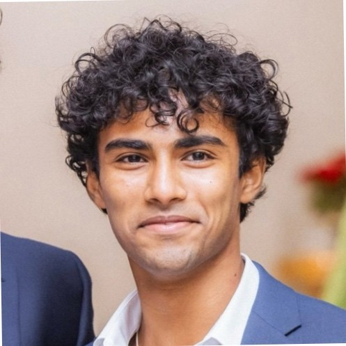

ECE & Business Honors Student at UT Austin
LinkedIn | rajanroshan@utexas.edu | Frisco, TX
I'm a dual-degree student at UT Austin pursuing B.S. ECE Honors and B.B.A. Business Honors & Finance, passionate about distributed systems, computer vision, and full-stack development.
University of Texas at Austin — B.S. ECE Honors, B.B.A. Business Honors & Finance, Expected May 2027
GPA: 3.6 | Engineering & Canfield Honors
Sep 2025 – Present
Built blockchain messaging infrastructure and a real-time TypeScript event-streaming engine to maintain cross-network data parity with 150ms sync lag.
Feb 2023 – Aug 2024
Engineered a Python AST-based code plagiarism detector for 200+ repositories and optimized internship matching algorithms to deliver 30+ successful placements.
May 2023 – Apr 2024
Deployed a YOLOv7/PyTorch computer vision pipeline on NVIDIA Jetson for real-time agricultural analysis, achieving 0.88 mAP at sub-100ms inference.